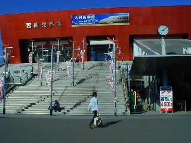
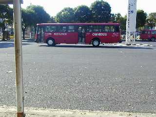
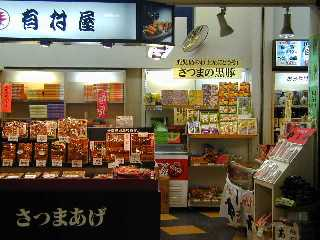
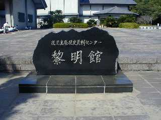
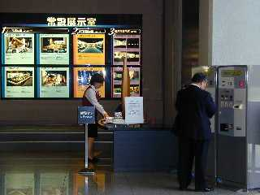
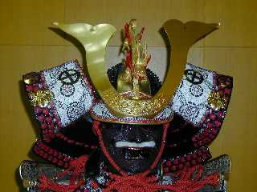
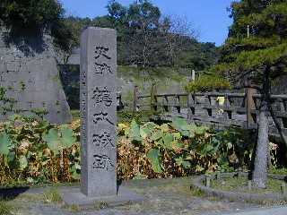

| ☆ＰＡＲＴ１ | |
|  | 西鹿児島駅前からスタート。 天気は快晴。 時計の針は午前９時１０分を指しています。 太郎「はーるばる来たぜ、はこだてー」 七世「ここはかごしまだろ！（笑）」 |
|  | ここは駅前のバスロータリーです。 第一チェックポイント「本丸跡で鎧を着ろ」 七世「あたまいいー（ガッツポーズ）」 |
|  | 七世ちゃんたちが聞きこみをしたお店です。 駅の中にありました。 おばさんが鶴丸城跡のことを教えてくれました。 |
|  | 七世ちゃんたちはバスに乗ったようですが、 私は市電に乗り「市役所前」で下車。 そこから徒歩で鶴丸城跡にある「黎明館」へ。 |
|  | 入館口です。 鎧は３階の体験学習室にあるそうなので、さっそく３階へ。 |
|  | この旅最大のお目当てといっても過言ではない 「七世かぶと」発見です。 第一チェックポイントクリアー！ 係りの人に「かぶってみますか？」と声をかけられました。 な、七世ちゃんのかぶったかぶとを！ドキドキ！ でも恥ずかしかったので「い、いえ結構ですぅ〜」 と思わず断ってしまいました。はわわ！ |
|  | 続いて第ニチェックポイントオープン！ 七世「たい、ノーベル賞？」「ようかん、イモようかん」「溶岩！」 |